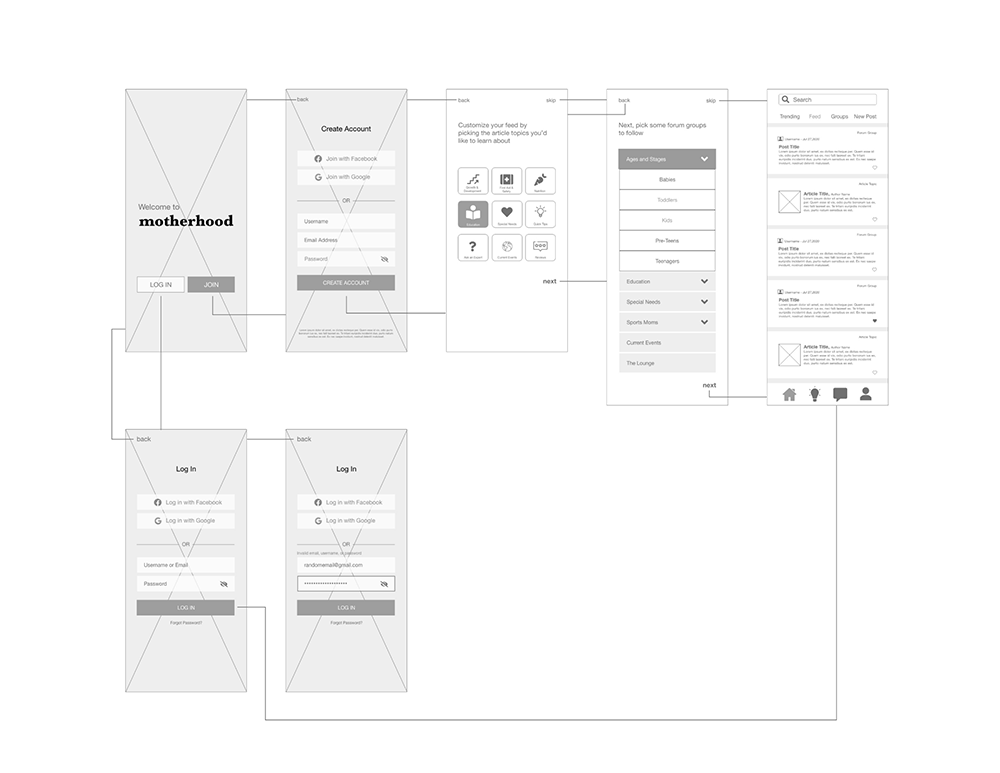
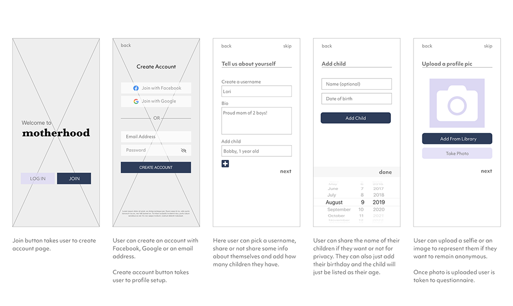
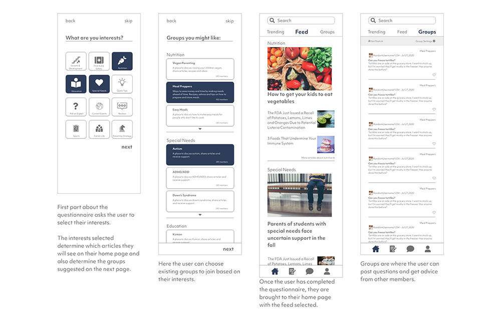

Overview
The Motherhood app was a concept developed for the course “User Experience I: Survey at UCLA Extension. The assignment was to create a Login and Create Account feature for a networking site to help moms with young kids.
- Client: Class project
- Role: UX/UI Designer & Researcher
- Tools: Adobe XD
- Duration: 3 months
Problem
Since the assignment was for a social networking app for mothers, it brought to mind sites like Facebook, LinkedIn or even dating sites like Bumble, but after interviewing 7 mothers I found that:
- They wanted the choice to be anonymous.
- Meeting new people seemed scary/risky.
- They're too busy to meet new people.
- They'd like to talk to parents who can relate.
So while, all of the mothers expressed wanting to talk with parents who’ve had similar experiences in order to make sure their child’s development was healthy and normal, they weren’t looking to network in the traditional sense.
Solution
Since the users were more interested in getting information and only casually talking to people, I referenced online groups, forums and sites like Scary Mommy, Reddit and even Peloton groups.
The app I created would have articles about parenting and a forum where they can post questions or vent. They would also be able to post under whatever username and have control over their privacy.
Target Market
Based on the interviews, I came up with 3 personas:
1. Lori, the “Busy Mom” who is doing it all.
 Lori's persona
Lori's persona
2. Jesse, the “New Mom” who has lots of questions and fears.
 Jesse's persona
Jesse's persona
3. Chelsea, the “Single Mom” who is a little lonely and wants to talk to people her age.
 Chelsea's persona
Chelsea's persona
Sitemap
I updated the sitemap to highlight the create account feature (which is the design focus for this app). Upon creating a new account, the user will be prompted to fill out their profile and a brief questionnaire. The questionnaire will then customize the user’s homepage according to their interests. The choices in the questionnaire were based on key interests from the mothers interviewed.
Wireframes
For the initial wireframes, the user would input their information when creating an account and then follow a brief questionnaire. The first page asks what they are interested in learning more about, which is a list of topics gathered from the original interviews. The second page is where they can choose groups based off of the topics they chose, that would be like “forums” the user can join to create and read posts.
 Initial wireframesFeedback after testing the initial wireframes, was that the "groups" part of the questionnaire was confusing and it needed more details. Also, users felt that the profile setup should be part of the account creation process.
Mid-fidelity Wireframes
For the mid-fidelity wireframes, the groups page was changed to include a description of what each group was about and the profile set-up was added before the questionnaire.
Feedback after testing these wireframes, was that the while the descriptions added to the “groups” page was helpful, the page did not feel as interesting as the page where the user can choose their interests. Users also felt that the app felt empty and clinical.
 Create account wireframes  QuestionnairePrototype
For the final prototype, images were added to the background of the create account feature to add warmth. Small images were also added next to the group description on the “groups” page to add visual interest.
Click to view interactive prototype
 Prototype
Prototype